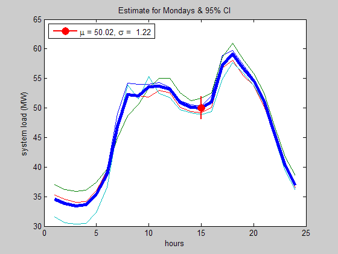

Energy Forecasting
This demo showcases visualization and analysis (heavy statistics) for forecasting energy usage based on historical data. We have access to hour-by-hour utility usage for the month of January, including information on the day of the week and the Heating Degree Days (defined as 65 minus Average Temperature) of each day. Using this information, we will come up with an algorithm for forecasting future energy usage based on parameters such as day-type, forecasted temperature, and time of day.
Contents
Load Data
Load data from excel worksheet
close all; fileName = 'January.xls'; energyData = xlsread(fileName, 'Liability', 'B2:Y32'); DayType = xlsread(fileName, 'Weather' , 'B2:B32'); HDD = xlsread(fileName, 'Weather' , 'C2:C32'); %Heating Degree Days Temp = xlsread(fileName, 'Weather' , 'D2:D32'); numDays = size(energyData,1); numHours = size(energyData,2); allDays = {'Monday', 'Tuesday', 'Wednesday', 'Thursday', ... 'Friday', 'Saturday', 'Sunday'}; % Forecast for dayOfWeek = 'Monday'; timeOfDay = 15 ; % 3PM
Visualization
Quick visualization of data (in 3D and contour)
myCreateFigure(energyData);
Statistics - Examine Distribution
In order to do some statistics, I am going to determine the distribution type of this data set.
averageDayProfile = mean(energyData); res = energyData-repmat(averageDayProfile,numDays,1); myDistFit(res);
Visualize Confidence Intervals
From the distribution analysis, I will conclude that the data set has a normal distribution. With this information, we can perform more in-depth statistics based on normal distribution.
The following custom plotting routine takes data as an input, calculate the estimated mean and 95% confidence interval of the mean, and plots the the results.
% Mean, Standard Deviation, and Confidence Intervals [meanD,stdevD,ciD] = normfit(energyData ); % across days [meanH,stdevH,ciH] = normfit(energyData'); % across hours plotCI(energyData,meanD,stdevD,ciD,meanH,stdevH,ciH);
Observations
As you can see, the daily profile seems to have a very tight confidence interval, suggesting that the general trend throughout the day is similar from day to day.
Average Day Effects
By looking at average profiles for each day of the week, we can make some observations on daily trends.
for id = 1:7 % Monday thru Sunday dat(id,:) = mean(energyData(DayType==id,:),1); %#ok end figure; plot(dat'); xlabel('hours'); ylabel('system load (MW)'); legend(allDays{:}, 'Location', 'Best');
Observations
We can see that the morning energy spike is not prominent on the weekends. Also, Mondays tend to have more usage throughout the day, and Saturdays have the lowest usage.
Energy Usage Predictions
Forecast usage based on time of day and day of week.
% Defined at the beginning of the script % dayOfWeek = 'Monday'; % timeOfDay = 15 ; % 3PM % call a function for estimating energy usage estimateSingleDay(energyData, DayType, dayOfWeek, timeOfDay);
sysLoad = 50.0157 sysLoadCI = 48.0822 51.9493
Correlation with Heating Degree Days
We have a single piece of information per day regarding the temperature of each day (Heating Degree Days). Let's try to see if this information can be used as an indicator for any of the statistics of the profile. We can determine this by examining the correlation coefficients between HDD and the various statistical parameters.
% calculate other statistics medianH = median(energyData, 2 ); minH = min (energyData, [], 2); maxH = max (energyData, [], 2); rangeH = range (energyData, 2 ); % Calculate a matrix of correlation coefficients and a matrix of p-values. % We're only interested in the first row (or column) of the matrices, since % we want to see how "hdd" correlates to the other variables [R,P] = corrcoef([HDD,meanH',medianH,minH,maxH,rangeH,stdevH']); % Display on screen fprintf(' ');fprintf('%7s ', 'mean', 'median', 'min', 'max', 'range', 'stdev');fprintf('\n'); fprintf('corr: ');fprintf('%7.4f ', R(2:end,1));fprintf('\n'); fprintf('p-val:');fprintf('%7.4f ', P(2:end,1));fprintf('\n');
mean median min max range stdev corr: 0.5720 0.4125 0.6350 0.7606 0.4835 0.3802 p-val: 0.0008 0.0211 0.0001 0.0000 0.0059 0.0349
Observations
Correlation of 1 means perfect positive correlation. The result seems to show that Heating Degree Days is a good indicator of the maximum system load for that day. It has relatively high correlation and is significant.
Conclusion
We explored historical energy usage data to develop a forecasting system. Statistics and visualizations revealed that there are usage trends throughout the day, and the trends seem to depend on the day of the week. This knowledge can be used for a gross forecast of the energy usage. We also found that there are some correlations between the Heating Degree Days (HDD) and certain statistical parameters of the profile. We may use this information to fine tune our forecast.
Further analysis may provide more insights to developing this forecasting system.